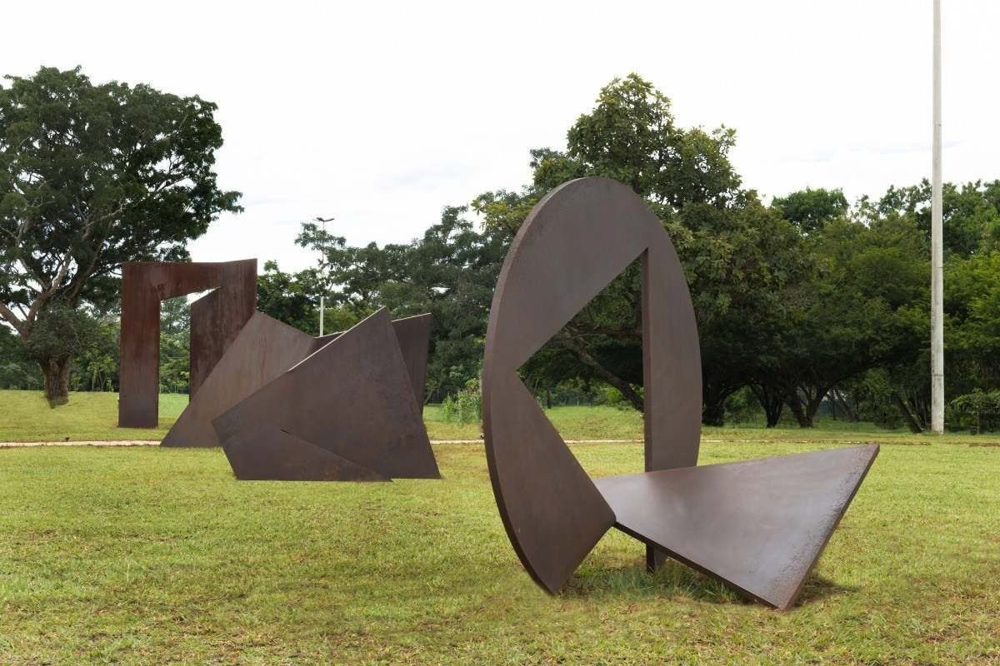

O que vimos?
A gente viu sobre o conceito de linhas e de planos, como também sobre a luz e a sombra
Linha
Vimos sobre linhas. Vemos algumas obras que usaram apenas linhas.
Uma linha é a trajetória de um ponto em movimento, tendo comprimento, mas sem largura.
É o rastro invisível. Um ponto em movimento e que representa tensão ativa, em contraste com a calma do ponto.

Planos
Um plano é formado pela trajetória de uma linha em movimento, possuindo comprimento e largura, mas sem espessura.
Ele é limitado por linhas e define os limites externos de um volume.

Luz e sombra
A linha define o formato, enquanto a sombra revela a forma.
A iluminação guia a atenção seletivamente, de acordo com o significado desejado.
Destacando objetos sem depender de tamanho, cor ou posição central.

Luz parece vir de um livro iluminado que Maria lê, destacando a criança e projetando a sombra gigantesca de José.
Atividade
Fizemos também uma atividade
sobre fazer um degradê com linhas, em que consistia em fazer linhas mais separadas para as mais juntas e cruzando elas para ter um resultado mais escuro.